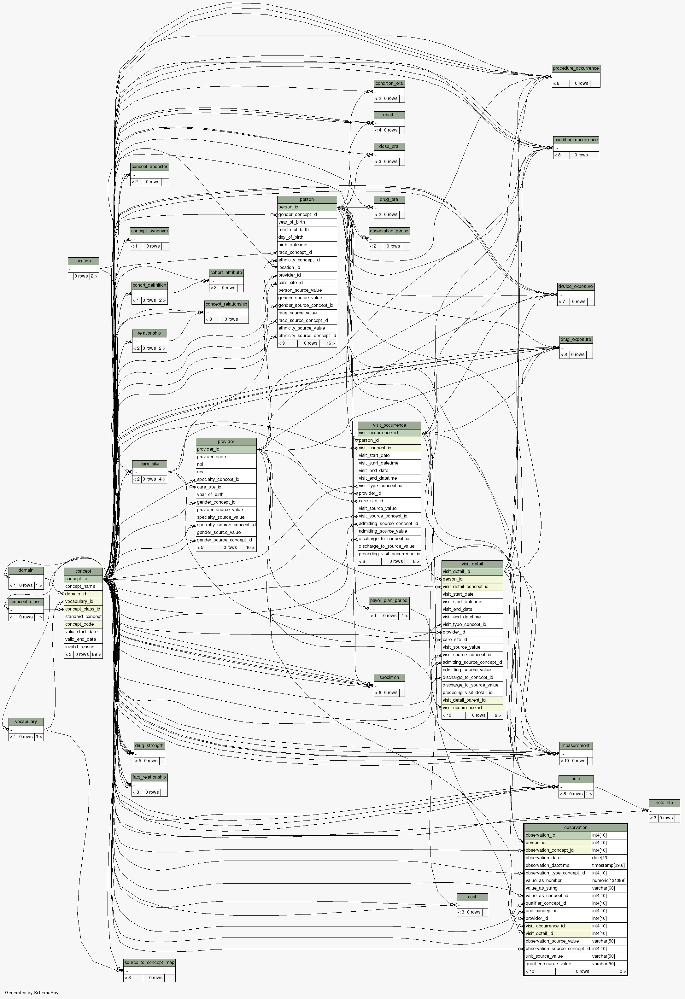
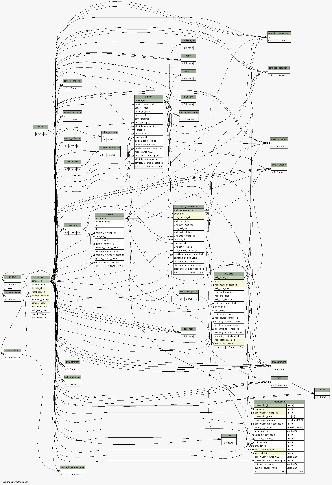

| Table postgres.omop.observation [CLINICAL] The OBSERVATION table captures clinical facts about a Person obtained in the context of examination, questioning or a procedure. Any data that cannot be represented by any other domains, such as social and lifestyle facts, medical history, family history, etc. are recorded here.
|
Generated by SchemaSpy |
| |||||||||||||||||||||||||||||||||||||||||||||||||||||||||||||||||||||||||||||||||||||||||||||||||||||||||||||||||||||||||||||||||||||||||||||||||||||||||||||||||||||||||||||||||||||||||||||||
Table contained 0 rows at dim. sept. 10 20:08 CEST 2017 | |||||||||||||||||||||||||||||||||||||||||||||||||||||||||||||||||||||||||||||||||||||||||||||||||||||||||||||||||||||||||||||||||||||||||||||||||||||||||||||||||||||||||||||||||||||||||||||||
Indexes:
| Column(s) | Type | Sort | Constraint Name |
|---|---|---|---|
| observation_id | Primary key | Asc | xpk_observation |
| observation_concept_id | Performance | Asc | idx_observation_concept_id |
| person_id | Performance | Asc | idx_observation_person_id |
| visit_detail_id | Performance | Asc | idx_observation_visit_detail_id |
| visit_occurrence_id | Performance | Asc | idx_observation_visit_id |
 

|